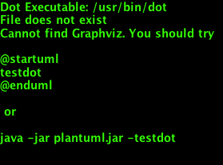

Note: This documentation pertains to the 2.x version of the plugin.
Frequently, we would like exclude some files from being used as sources for XJC or SchemaGen. For example, if all Java Sources placed under src/main/java except one should be used to distill the XSD files by SchemaGen we must configure the SchemaGen mojo to exclude that particular file.
This type of operation is done with a Filter, which - in this case - identifies Files to exclude from the normal operation. The Java world sports several projects that define Filters, such as the filter definitions in Apache ANT, the LambdaJ from Google or the JDK 8 java.util.stream collection filtering. Most of these implementations, however, work in slightly different ways which tends to complicate the life of us programmers quite a bit. Just remembering the exact syntax to create a Filter from one of these projects can be somewhat problematic. Moreover, the JDK 8 mechanics cannot be used as the jaxb2-maven-plugin must be binary compatible with JDK 1.6+.
Filters used by the JAXB2 Maven plugin are visitors, similar in structure to the well-known java.io.FileFilter. As shown in the listing below, the Filters used by the Jaxb2 Maven Plugin sport 2 methods:
accept: The actual filter method which returns true if the given candidate is accepted and false otherwise.
public interface Filter<T> {
/**
* Initializes this Filter, and assigns the supplied Log for use by this Filter.
*
* @param log The non-null Log which should be used by this Filter to emit log messages.
*/
void initialize(Log log);
/**
* @return {@code true} if this Filter has been properly initialized (by a call to
* the {@code initialize} method).
*/
boolean isInitialized();
/**
* <p>Method that is invoked to determine if a candidate instance should be accepted or not.
* Implementing classes should be prepared to handle {@code null} candidate objects.</p>
*
* @param candidate The candidate that should be tested for acceptance by this Filter.
* @return {@code true} if the candidate is accepted by this Filter and {@code false} otherwise.
* @throws java.lang.IllegalStateException if this Filter is not initialized by a call to the
* initialize method before calling this matchAtLeastOnce method.
*/
boolean accept(T candidate) throws IllegalStateException;
}
While this Filter implementation is simple enough to be implemented directly, the jaxb2-maven-plugin codebase contains implementations intended to simplify creating custom Filters - and indeed some concrete implementations as well. The inheritance hierarchy contains several types, as shown in the image below:

The Filter types are described below:
The jaxb2-maven-plugin also contains two concrete Filter implementations, directly usable in the plugin’s configuration:
A slightly more detailed class diagram than the one above is shown below:

Excluding some files from processing is a straightforward task. Create a PatternFileFilter instance and populate it with some pattern strings from which it should create java.util.regexp.Patterns. A PatternFileFilter which matches any file whose full path end with .xsd or .foo is defined as follows:
<filter implementation="org.codehaus.mojo.jaxb2.shared.filters.pattern.PatternFileFilter">
<patterns>
<pattern>\.xsd</pattern>
<pattern>\.foo</pattern>
</patterns>
</filter>
But … wait a second. If the patterns supplied in the configuration snippet above are intended to match the full path of the file /some/path/to/src/main/xsd/blah.xsd, the pattern specification above is clearly not sufficient. The PatternFileFilter must prepend some other string to create a Pattern able to match the given file path. The string prepended to the supplied patterns is given by the configuration property patternPrefix, which defaults to the value (\\p{javaLetterOrDigit}|\\p{Punct})+. Therefore, each pattern string in the configuration above is prepended to yield the two effective patterns:
These two patterns are sufficient for matching the fully qualified path of the file /some/path/to/src/main/xsd/blah.xsd. For clarity, the effective pattern string used to compile the Patterns for matching files are also emitted when you run the jaxb2-maven-plugin with debug log settings. An example of typical output plugin debug logging is harvested from one of the integration tests in the jaxb2-maven-plugin itself. Note the two resulting regular expressions used by the PatternFileFilter:
+=================== [Filtered sources]
|
| 1 Exclude patterns:
| [1/1]: Filter [PatternFileFilter]
| Processes nulls: [false]
| Accept on match: [true]
| 2 regularExpressions ...
| [0/2]: (\p{javaLetterOrDigit}|\p{Punct})+\.xsd
| [1/2]: (\p{javaLetterOrDigit}|\p{Punct})+\.foo
|
| 1 Standard Directories:
| [1/1]: src/main/xsd
|
| 3 Results:
| [1/3]: file:/Users/lj/Development/Projects/Codehaus/github_jaxb2_plugin/target/it/xjc-exclude-file-patterns/src/main/foo/gnat.txt
| [2/3]: file:/Users/lj/Development/Projects/Codehaus/github_jaxb2_plugin/target/it/xjc-exclude-file-patterns/src/main/someOtherXsds/fooSchema.txt
| [3/3]: file:/Users/lj/Development/Projects/Codehaus/github_jaxb2_plugin/target/it/xjc-exclude-file-patterns/src/main/someOtherXsds/some_schema.bar
|
+=================== [End Filtered sources]
A maven configuration for creating a PatternFileFilter which excludes any source files whose full paths end in either .xsd or .foo is done as follows:
<!--
When providing xjcSourceExcludeFilters, the default exclude
Filter definitions are overridden by the Patterns supplied.
The filter below matches all Files with full paths that end with ".xsd" or ".foo".
-->
<xjcSourceExcludeFilters>
<filter implementation="org.codehaus.mojo.jaxb2.shared.filters.pattern.PatternFileFilter">
<patterns>
<pattern>\.xsd</pattern>
<pattern>\.foo</pattern>
</patterns>
</filter>
</xjcSourceExcludeFilters>
Filters can be used to identify files to be excluded from processing by XJC and SchemaGen. All configuration properties for Mojos within the jaxb2-maven-plugin use optional Filters to identify these
For a fuller example of configuring a PatternFileFilter, refer to the SchemaGen Basic Usage page.
Should you want to integrate another Filter implementation for pattern matching into the jaxb2-maven-plugin configuration, you can simply implement and configure new Filter. In this case, we recommend that your implementation extend the AbstractFilter class (or any of its subclasses) to reuse the default lifecycle implemented there.
When implemented, configure the jaxb2-maven-plugin to use your Filter - and do not forget to add the fully qualified class name of your custom Filter class:
<!--
Use a custom Filter to find and exclude XJC sources.
-->
<xjcSourceExcludeFilters>
<filter implementation="my.custom.Filter">
... Configuration properties for your Filter implementation here ...
</filter>
</xjcSourceExcludeFilters>
Feel free to submit well-documented Filter implementations to the jaxb2-maven-plugin team if you feel they ought to be included within the standard distribution.